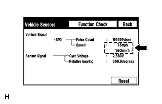

DTC B15C2 Неверный сигнал скорости |
| Код DTC | Условие обнаружения DTC | Неисправный участок |
| B15C2 | Обнаружено различие между сигналами скорости GPS и SPD. |
|
| 1.ПРОВЕРЬТЕ ДАТЧИК АВТОМОБИЛЯ |
|  |
Войдите в режим "GPS & Vehicle Sensor" (GPS и датчики автомобиля) ("Vehicle Sensors" – датчики автомобиля) (Нажмите здесь).
Во время движения автомобиля сравните показания параметра "SPD" (скорость) с показаниями спидометра. Убедитесь в том, что показания совпадают или почти совпадают.
|
| ||||
| OK | ||
| ||